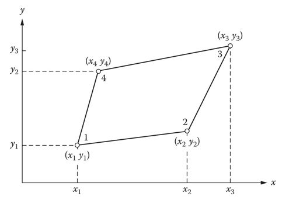
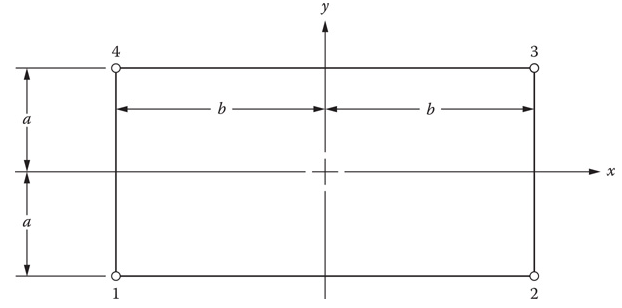
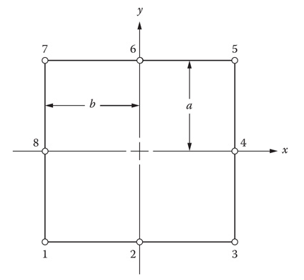
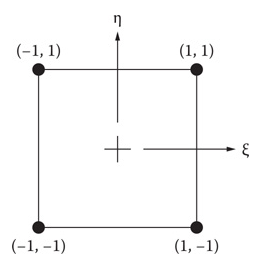
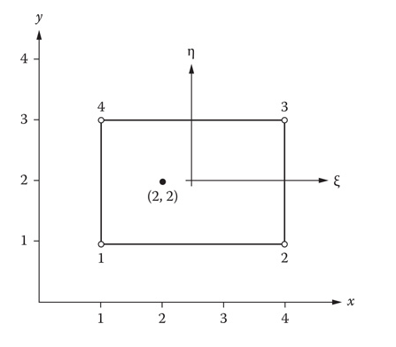
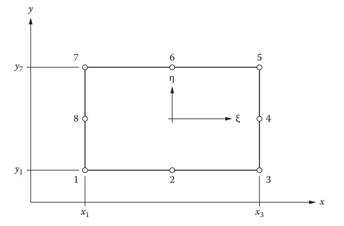

Originalmente el MEF utilizaba únicamente elementos triangulares. Sin embargo, en la actualidad muchos investigadores prefieren elementos cuadrilateros. En una aproximación lineal (bilineal) el elemento cuadrilatero añade un nodo (a los tres del elemento triangular).

Sin embargo, aunque añadir un nodo más que el elemento sea más complejo normalmente reduce el número de elementos por la mitad.
Como una simplificación empezaremos nuestro desarrollo con elementos Rectangulares. A diferencia de los elementos cuadrilateros en general estos tienen sus lados alineados con los ejes $x$ y $y$.
La función de interpolación de un rectangulo bilineal está dada por:
$$f= \alpha_1 + \alpha_2 x + \alpha_3 y + \alpha_4 xy$$El término $xy$ fue escogido en lugar de $x^2$ o $y^2$ porque no rompe la simetría y permite que el comportamiento sea lineal, lo que puede ser observado al calular:
$$\dfrac {\partial \phi} {\partial x}= \alpha_2+ \alpha_4 y$$$$\dfrac {\partial \phi} {\partial y}= \alpha_3+ \alpha_4 x$$Es decir: si nos movemos en la dirección $x$ ($y$ constante) o $y$ ($x$ constante) tendremos un comportamiento lineal.
Si medimos las distancias a los nodos desde el centro del elemento:

Los valores de la variable dependiente $\phi$ en los nodos $i = 1,2,3,4$ serán:
$$\phi = \phi_1\text{ en } x=-b, y=-a$$$$\phi = \phi_2\text{ en } x=b, y=-a$$$$\phi = \phi_3\text{ en } x=b, y=a$$$$\phi = \phi_4\text{ en } x=-b, y=a$$Lo que nos permite obtener un sistema de cuatro ecuaciones con cuatro incógnitas:
$$\phi_1= \alpha_1 + \alpha_2 (-b) + \alpha_3 (-a) + \alpha_4 (-b)(-a) $$$$\phi_2= \alpha_1 + \alpha_2 (b) + \alpha_3 (-a) + \alpha_4 (b)(-a)$$$$\phi_3= \alpha_1 + \alpha_2 (b) + \alpha_3 (a) + \alpha_4 (b)(a)$$$$\phi_4= \alpha_1 + \alpha_2 (-b) + \alpha_3 (a) + \alpha_4 (-b)(a)$$Resolviendo este sistema para $\alpha_1, \alpha_2, \alpha_3, \alpha_4$:
$$\alpha_1 = \dfrac{\phi_1+\phi_2+\phi_3+\phi_4} {4}$$$$\alpha_2 = \dfrac{-\phi_1+\phi_2+\phi_3-\phi_4} {4b}$$$$\alpha_3 = \dfrac{-\phi_1-\phi_2+\phi_3+\phi_4} {4a}$$$$\alpha_4 = \dfrac{\phi_1-\phi_2+\phi_3-\phi_4} {4ab}$$Así, nuestra función dependiente queda como:
$$f= \dfrac{\phi_1+\phi_2+\phi_3+\phi_4} {4} + \dfrac{-\phi_1+\phi_2+\phi_3-\phi_4} {4b} x + \dfrac{-\phi_1-\phi_2+\phi_3+\phi_4} {4a} y + \dfrac{\phi_1-\phi_2+\phi_3-\phi_4} {4ab} xy$$Si reacomodamos nuestra función para tener la forma:
$$\phi = N_1\phi_1 + N_2\phi_2 + N_3\phi_3 + N_4\phi_4$$Obtenemos:
$$N_1 = \dfrac {1} {4ab}\left(b-x \right)\left(a-y \right)$$$$N_2 = \dfrac {1} {4ab}\left(b+x \right)\left(a-y \right)$$$$N_3 = \dfrac {1} {4ab}\left(b+x \right)\left(a+y \right)$$$$N_4 = \dfrac {1} {4ab}\left(b-x \right)\left(a+y \right)$$Existen dos variaciones del elemento rectangular cuadrático. Una tiene nodos en los cuatro vértices y en el centro de los cuatro lados (sumando ocho nodos). La otra tiene un nodo extra al centro del elemento. Para el elemento de ocho nodos:

La función de la variable dependiente es:
$$\phi = \alpha_1 + \alpha_2 x + \alpha_3 y + \alpha_4 xy + \alpha_5 x^2 + \alpha_6 y^2 + \alpha_7 x^2y + \alpha_8 x y^2$$Los valores nodales:
$$\phi = \phi_1\text{ en } x=-b, y=-a$$$$\phi = \phi_2\text{ en } x=0, y=-a$$$$\phi = \phi_3\text{ en } x=b, y=-a$$$$\phi = \phi_4\text{ en } x=b, y=0$$$$\phi = \phi_5\text{ en } x=b, y=a$$$$\phi = \phi_6\text{ en } x=0, y=a$$$$\phi = \phi_7\text{ en } x=-b, y=a$$$$\phi = \phi_8\text{ en } x=-b, y=0$$De donde resulta el sistema:
$$\begin{bmatrix} 1 & -b & -a & ab & b^2 & a^2 & -ab^2 & -a^2b \\ 1 & 0 & -a & 0 & 0 & a^2 & 0 & 0 \\ 1 & b & -a & -ab & b^2 & a^2 & -ab^2 & a^2b \\ 1 & b & 0 & 0 & b^2 & 0 & 0 & 0 \\ 1 & b & a & ab & b^2 & a^2 & ab^2 & a^2b \\ 1 & 0 & a & 0 & 0 & a^2 & 0 & 0 \\ 1 & -b & a & -ab & b^2 & a^2 & ab^2 & -a^2b \\ 1 & -b & 0 & 0 & b^2 & 0 & 0 & 0 \end{bmatrix} \begin{bmatrix} \alpha_1 \\ \alpha_2 \\ \alpha_3 \\ \alpha_4 \\ \alpha_5 \\ \alpha_6 \\ \alpha_7 \\ \alpha_8 \end{bmatrix} = \begin{bmatrix} \phi_1 \\ \phi_2 \\ \phi_3 \\ \phi_4 \\ \phi_5 \\ \phi_6 \\ \phi_7 \\ \phi_8 \end{bmatrix}$$La función de la variable dependiente se puede construir con:
$$\phi = N_1\phi_1 + N_2\phi_2 + N_3\phi_3 + N_4\phi_4 + N_5\phi_5 + N_6\phi_6 + N_7\phi_7 + N_8\phi_8$$Así, se pueden obtener las funciones de forma:
$$N_1 = \dfrac{1} {4(ab)^2}(b-x)(a-y)(-ax-by-ab)$$$$N_2 = \dfrac{1} {2ab^2}(b^2-x^2)(a-y)$$$$N_3 = \dfrac{1} {4(ab)^2}(b-x)(a-y)(ax-by-ab)$$$$N_4 = \dfrac{1} {2a^2b}(a^2-y^2)(b+x)$$$$N_5 = \dfrac{1} {4(ab)^2}(b+x)(a+y)(ax+by-ab)$$$$N_6 = \dfrac{1} {2ab^2}(b^2-x^2)(a+y)$$$$N_7 = \dfrac{1} {4(ab)^2}(b-x)(a+y)(ax-by+ab)$$$$N_8 = \dfrac{1} {2a^2b}(a^2-y^2)(b-x)$$En la mayoría de las situaciones el dominio no estará limitado por lados rectos y ortogonales. Una región con fronteras curvas se puede discretizar con elementos cuadrilateros (no rectangulares) para obtener una solución más precisa. La transformación de lados rectos a lados curvos se puede lograr expresando las coordenadas $x$, $y$ en usando las coordenadas:
$$x=x(\xi, \eta)$$$$y=y(\xi, \eta)$$La selección de $\xi$ y $\eta$ dependerá de la geometría del elemento. Estas coordenadas se conocen como coordenadas naturales cuando se cumple que $ (-1 \le \xi \le 1)$ y $ (-1 \le \eta \le 1).$
En el caso de un elemento rectangular las coordenadas se pueden obtener usando:
$$\xi = \dfrac {x-x_c} {b}$$$$\eta = \dfrac {y-y_c} {a}$$Donde $(x_c, y_c)$ son las coordenadas del centro del elemento y $b$ y $a$ son la mitad del tamaño del elemento en las direcciones $x$ y $y$ respectivamente.

Así, las funciones de forma bilineales se pueden reescribir como:
$$N_1 = \dfrac {1} {4}\left(1-\xi \right)\left(1-\eta \right)$$$$N_2 = \dfrac {1} {4}\left(1+\xi \right)\left(1-\eta \right)$$$$N_3 = \dfrac {1} {4}\left(1+\xi \right)\left(1+\eta \right)$$$$N_4 = \dfrac {1} {4}\left(1-\xi \right)\left(1+\eta \right)$$La evaluación de las derivadas es similar a la utilizada en los elementos triangulares. El Jacobiano relaciona las derivadas:
$$\begin{bmatrix} \dfrac {\partial N_i} {\partial \xi} \\ \dfrac {\partial N_i} {\partial \eta}\end{bmatrix} =\begin{bmatrix} \dfrac {\partial x}{\partial \xi}&\dfrac {\partial y}{\partial \xi} \\ \dfrac {\partial x}{\partial \eta}&\dfrac {\partial y}{\partial \eta} \end{bmatrix}\begin{bmatrix} \dfrac {\partial N_i} {\partial x} \\ \dfrac {\partial N_i} {\partial y}\end{bmatrix} = \mathbf{J}\begin{bmatrix} \dfrac {\partial N_i} {\partial x} \\ \dfrac {\partial N_i} {\partial y}\end{bmatrix}$$Así las derivadas se con respecto a las coordenadas ($x$, $y$) se pueden encontrar usando:
$$\begin{bmatrix} \dfrac {\partial N_i} {\partial x} \\ \dfrac {\partial N_i} {\partial y}\end{bmatrix} = \mathbf{J}^{-1}\begin{bmatrix} \dfrac {\partial N_i} {\partial \xi} \\ \dfrac {\partial N_i} {\partial \eta}\end{bmatrix} $$Ejemplo 5.1:
Encontrar las el valor de las derivadas $\partial N_1/\partial x$ y $\partial N_1/\partial y$ en $x=2$ y $y=2$ para el elemento mostrado:

Las transformaciones de estos elementos quedan:
$$\xi = \dfrac {x-x_c} {b} = \dfrac {x-5/2} {3/2} $$$$\eta = \dfrac {y-y_c} {a} = \dfrac {y-2} {1}$$De donde:
$$ x = \dfrac {1} {2} (3\xi + 5)$$$$ y = \eta +2 $$El Jacobiano esta definido como:
$$\mathbf{J} = \begin{bmatrix} \dfrac {\partial x}{\partial \xi}&\dfrac {\partial y}{\partial \xi} \\ \dfrac {\partial x}{\partial \eta}&\dfrac {\partial y}{\partial \eta} \end{bmatrix}$$Evaluando las derivadas:
$$\dfrac {\partial x}{\partial \xi} = \dfrac {3} {2}$$$$\dfrac {\partial y}{\partial \xi} = 0$$$$\dfrac {\partial x}{\partial \eta} = 0$$$$\dfrac {\partial y}{\partial \eta} = 1$$La inversa es:
$$\mathbf{J}^{-1} = \dfrac{1} {3}\begin{bmatrix} 2 & 0 \\ 0 & 3 \end{bmatrix}$$La función de forma $N_1$ es igual a:
$$N_1 = \dfrac {1} {4}\left(1-\xi \right)\left(1-\eta \right)$$De manera que las derivadas son:
$$\dfrac {\partial N_1} {\partial \xi} = - \dfrac {1-\eta} {4} $$$$ \dfrac {\partial N_1} {\partial \eta} = - \dfrac {1-\xi} {4}$$Evaluamos estas derivadas en $x=2$ y $y=2$, estos puntos tienen coordenadas $\xi$, $\eta$:
$$\xi = \dfrac {x-5/2} {3/2} = \dfrac {(2)-5/2} {3/2} = -\dfrac {1} {3}$$$$\eta = y-2 = (2)-2 = 0$$Por lo que:
$$\dfrac {\partial N_1} {\partial \xi} = - \dfrac {1-\eta} {4} = - \dfrac {1-(0)} {4} = - \dfrac {1} {4}$$$$ \dfrac {\partial N_1} {\partial \eta} = - \dfrac {1-\xi} {4} = - \dfrac {1-(1/3)} {4} = - \dfrac {1} {3}$$La multiplicación de las matrices nos da las derivadas:
$$\begin{bmatrix} \dfrac {\partial N_1} {\partial x} \\ \dfrac {\partial N_1} {\partial y}\end{bmatrix} = \dfrac{1} {3}\begin{bmatrix} 2 & 0 \\ 0 & 3 \end{bmatrix} \begin{bmatrix} - \dfrac {1} {4} \\ - \dfrac {1} {3}\end{bmatrix} = \begin{bmatrix} - \dfrac {1} {6} \\ - \dfrac {1} {3}\end{bmatrix} $$El elemento cuadrático con ocho nodos queda expresado en coordenadas naturales como:
$$\phi = \alpha_1 + \alpha_2 \xi + \alpha_3 \eta + \alpha_4 \xi \eta + \alpha_5 \xi^2 + \alpha_6 \eta^2 + \alpha_7 \xi^2 \eta + \alpha_8 \xi \eta^2$$
Las funciones de forma están dadas por:
$$N_1 = -\dfrac{1} {4}(1-\xi)(1-\eta)(1+\xi+\eta)$$$$N_2 = \dfrac{1} {2}(1-\xi^2)(1-\eta)$$$$N_3 = \dfrac{1} {4}(1+\xi)(1-\eta)(\xi-\eta-1)$$$$N_4 = \dfrac{1} {2}(1-\eta^2)(1+\xi)$$$$N_5 = \dfrac{1} {4}(1+\xi)(1+\eta)(\xi+\eta-1)$$$$N_6 = \dfrac{1} {2}(1-\xi^2)(1+\eta)$$$$N_7 = -\dfrac{1} {4}(1-\xi)(1+\eta)(1+\xi-\eta)$$$$N_8 = \dfrac{1} {2}(1-\eta^2)(1-\xi)$$La evaluación de las derivadas sigue el mismo camino que en el caso lineal:
$$\begin{bmatrix} \dfrac {\partial N_i} {\partial \xi} \\ \dfrac {\partial N_i} {\partial \eta}\end{bmatrix} = \mathbf{J}\begin{bmatrix} \dfrac {\partial N_i} {\partial x} \\ \dfrac {\partial N_i} {\partial y}\end{bmatrix}$$Con el Jacobiano:
$$\mathbf{J} = \begin{bmatrix} \dfrac {\partial x}{\partial \xi}&\dfrac {\partial y}{\partial \xi} \\ \dfrac {\partial x}{\partial \eta}&\dfrac {\partial y}{\partial \eta} \end{bmatrix}$$Las derivadas que forman el Jacobiano se pueden obtener a partir de las fórmulas:
$$x = b \xi + x_c = \dfrac {1} {2} (x_3-x_1) \xi + \dfrac {1} {2} (x_1 +x_3)$$$$y = a \eta + y_c = \dfrac {1} {2} (y_7-y_1) \eta + \dfrac {1} {2} (y_1 +y_7)$$